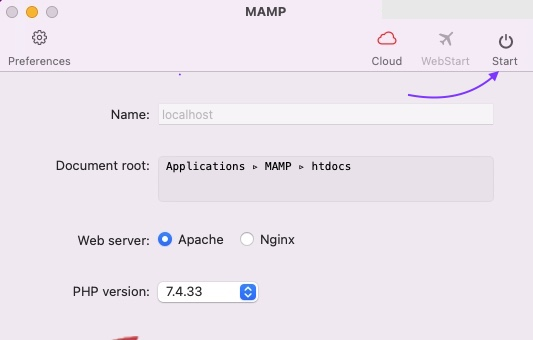
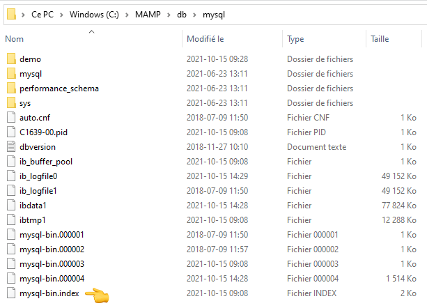

MAMP est un environnement de serveur local gratuit fournissant le nécessaire afin d'exécuter WordPress à des fins de développement. Son acronyme provient des mots:
Macintosh, Apache, MySQL et [PHP, Pearl ou Python]
Bien que ce logiciel est initialement été conçu pour macOS, il est maintenant disponible en version Windows depuis plusieurs années.
MAMP n'est pas intimement lié à Wordpress, le CMS que nous allons explorer aujourd'hui. MAMP correspond à un ensemble d'outils qui contient notamment un serveur virtuel, afin de nous permettre d'exécuter du code serveur tel que du PHP et de faire des requêtes à une base de données. Il vous permet donc d'avoir un environnement serveur simulé localement, sur vos postes de travail.
https://www.mamp.info/en/mamp/
Le site de MAMP devrait reconnaitre automatiquement votre système d'exploitation et vous rediriger vers la page relative à votre OS. En cas contraire, sélectionnez votre système d'exploitation dans la liste déroulante de Free Download en cliquant sur la petite flèche à droite du bouton. Lorsque votre système d'exploitaion est bien sélectionné, cliquez sur le bouton Free Download.
Une seconde plus tard, une fenêtre de votre système d'expoitation devrait apparaitre afin de sélectionner l'endroit où sauvegarder l'installeur MAMP.
Pour commencer, ouvrir le logiciel nommé MAMP (et non la version MAMP PRO même si les deux sont installés).
Pour démarrer le système, il suffit de cliquer sur le bouton "Start". Les indicateurs “Apache Server” et “MySQL Server” devraient tourner au vert 🟢 afin d’indiquer que les serveurs locaux sont actifs. La page d’accueil de MAMP devrait aussi s’ouvrir dans votre navigateur.
Les projets utilisant MAMP doivent se trouver à l'intérieur du dossier "htdocs" 📁 de MAMP afin de bénéficier des serveurs de MAMP. Sous Windows, ce dossier ce trouve généralement à cet emplacement “C:\MAMP\htdocs” et sous Mac dans “/Applications/MAMP/htdocs”. Je vous conseille de créer un raccourci vers "htdocs" dans votre navigateur de fichiers.
Pour trouver ses projets, il suffit d'aller sur la page d’accueil de MAMP. Si cette dernière ne s’ouvre pas automatiquement au démarrage de MAMP ou si vous l’avez fermé par erreur, vous pouvez l’ouvrir manuellement via le bouton “Open WebStart page” de l’interface MAMP.
À partir de cette page, repérer l’option “My Website” du menu principal. Ce lien vous mènera vers la liste des projets MAMP sur votre poste.
L'onglet My Website est non disponible
Si l'option "My Website" n'est pas disponible dans votre version de MAMP, vous pouvez toujours accéder manuellement à l'URL d'un projet. Pour ce faire, il faut connaitre le nom du dossier du projet en question 📁 et allez voir dans les préférences de MAMP le port utilisé (généralement 80 ou 8888). Tapez ensuite dans la barre d'URL de votre navigateur une adresse au format suivant:
Par exemple, pour un projet contenu dans un dossier nommé "demo" et utilisant le port 80:
Ce problème provient d'une configuration propre au collège (vous ne devriez pas rencontrer ce problème chez vous). Pour le contourner, il faut supprimer le fichier mysql-bin.index dans le dossier MAMP > db > mysql.

- WampServer
- XAMPP
- Laragon
- Etc.